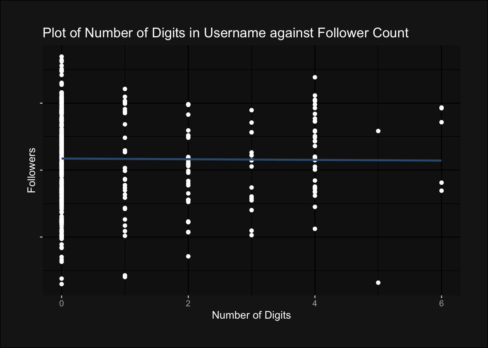
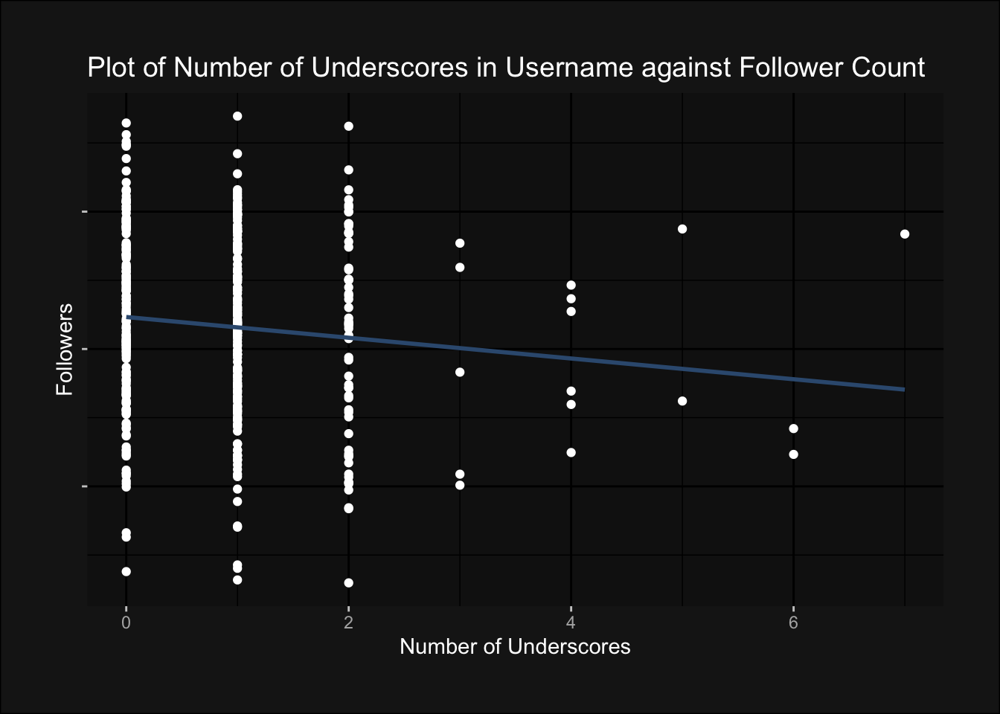
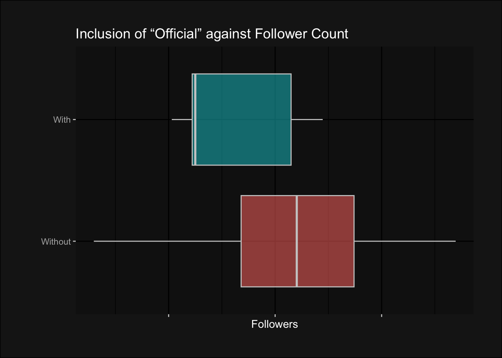
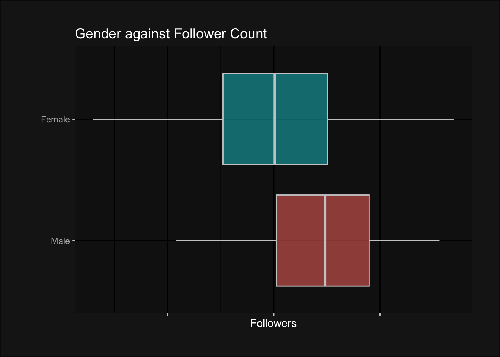
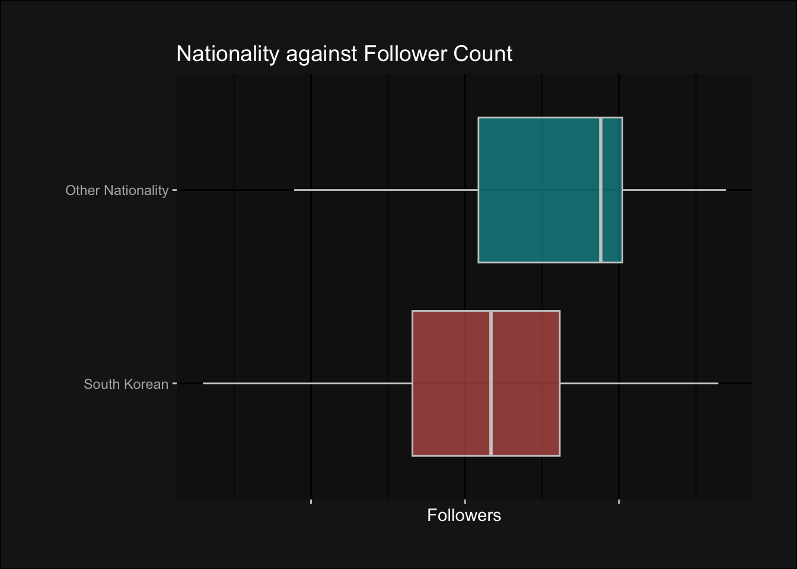

What’s in a (user)name?
A two-part analysis of K-pop idols’ Instagram follower counts and a derivative interactive app.

The key metric for an idol’s success is most often thought to be their fame. Where Instagram has become a hotspot for K-pop idols to communicate with fans, show off their brand sponsorships. and express themselves, follower counts have also become a quick way to quantify idols’ fame, and give an estimate of their popularity.
But, how exactly do idols gain followers through their profiles?
My question is as such: What is the optimal Instagram profile for a K-pop idol to achieve the most number of followers?
Arguably, the most important part of an Instagram profile is the username.
The maximum length of an Instagram username is 30 characters, within which one has the flexibility to put any letters, digits, and combinations of underscores and periods.
I want to study how K-pop idols have made use of these restrictions to create their usernames, and from that, how the designs of their usernames might have affected their follower counts, alongside the influence of external factors, like gender, age, and years in the industry.
I will ultimately deduce what characteristics are more likely to attract higher numbers of followers, and create a web app that lets one create a fake idol profile and generate an predicted amount of followers.
The dataset I will be using is “Kpop Idol Instagram Followers” retrieved from: Faisal Amir on Kaggle
Let us first examine our independent variable, the number of followers, before exploring the dependent variables:
As observed, we have a relatively small sample size in comparison to the large range of followers. For ease of visuals while plotting graphs and because comparisons of number of followers, rather than their individual counts, are more important in my analysis, much of my graphs will be on the logarithmic log2 scale without numbered axes.
Now, moving on the dependent variables, I have elected to split them into two categories: username-based or idol-based.
Username-based (Characteristics of a username):
Length (in characters)
Presence of and number of special symbols (periods (“.”), underscores(“_”))
Presence of and number of digits
Verification-related words: “official”
Identity-related words: inclusion of group name or stage name
Idol-based (Personal characteristics):
Gender
Age
Career length (in years)
Company reputation
Optimising a Username
Length
An easy differentiating factor between usernames is their length. According to the categorisations of our data, medium length usernames between 8 to 17 characters long have the highest median follower count.
Rather than short, snappy or long, winding usernames, we can observe that usernames that are medium length are not only the most popular, but also the most successful usernames.
Digits and Special Characters
Naturally, the contents of the username play an important role as well. Numbers and punctuation marks are often used to stylize the username, add personality, or to differentiate the username from already occupied handles.
Let us find out if using more of these characters lead to more followers:
- Numbers
The differences in range between the box plot for each group of a number of digits inform us that the sample sizes differ greatly, and have possibly heavily skewed the medians for the groups. Hence, we can look at a line plot instead on the next tab.

Observing the almost straight line of best fit, we can now conclude that the number of digits in a username has little bearing on the number of followers.
- Underscores
The box plots for this comparison is noticeably skewed by small sample size as well, as observed by the much smaller box (ie. the singular account) with seven underscores and the few accounts with six. In this case, comparing medians is again inaccurate; we can instead look to a line plot in the next tab.

This line plot now reveals the number of underscores in a username to be inversely correlated to their follower count.
- Periods
As for periods, the box plots for each group is similar, but usernames with no periods have a marginally higher median follower count.
We can conclude, in this section, that a medium length username without underscores or periods are likely to be popular usernames. The next section will focus on the actual words used in usernames.
Keywords
How accurately one’s username portrays their idol persona may also play a part in accruing followers. I hence look at several variations of showing one’s identity in usernames.
- Legitimacy: The inclusion of “official”

Adding the word “official” to one’s username may help separate an idol’s account from their fanpages, but it remains an unpopular choice overall, possibly due to more robust verification methods like the check mark. Its unnecessariness may render usernames without the addition of “official” more popular.
- Loyalty: The inclusion of one’s group name
Similarly, one’s group name helps to highlight one’s band and differentiate from other celebrities who may share names, a fairly common occurrence in Korea. However, as observed, these have little effect on follower counts.
- Legend: The inclusion of one’s stage name
Similarly, the median follower counts of idols who use or omit their stage names in their usernames are comparable.
We can conclude the analysis of usernames with the finding that, still, the factors that affect follower counts the most seem to be username length and conciseness, with special characters being generally disfavoured or having no effect and extraneous words like “official” being superfluous additions that may hinder, rather than attract, gaining followers.
Perhaps, the reason why these identity features have little effect on follower counts is because idols simply do not need their usernames to explicitly mention who they are. Rather, they are more well known by their real life traits that then translate into online fame.
The Perfect Idol
We hence move on to analysing other characteristics to find out which ones translate to the most Instagram fame.
Gender

Despite there being less male idols on Instagram, they have much higher median numbers of followers. This follows overall industry trends where fans of male artists generally outnumber female artists’, and male groups attain higher sales figures, whether in albums, concert tickets, or merchandise (Dong, 2020).
Age and Seniority
The K-pop industry, having been steadily growing since its beginning in 1992, now has musicians across a wide age range (Romano, 2018). Although the few idols with the most followers overall are generally in the middle of the age range, the saturation in that age range with many more idols with much lower follower counts mean that generally, the oldest idols are still more likely to have more followers.
Indeed, a similar trend can be observed between follower counts and seniority as an idol, where the longer the average idol has been active in the industry, the higher their follower counts.
Interestingly, a high point and dip can be observed consecutively between from 0 to 3 years of seniority. This can be attributed to the impact of the COVID-19 pandemic on the industry, where a slump severely impacted and postponed most idols’ debuts (Jeon, 2022). Subsequently, these long-awaited debuts were made around the same time in 2022 and received much greater attention, represented in their high numbers of followers.
Nationality

People also come from a diversity of locations to South Korea seek a career in their booming music industry. While South Korean idols are the majority, their foreign counterparts may stand out more precisely because they are a minority; their multilingual statuses as global idols garner them significantly more followers, especially those from their home countries, than the average South Korean idol.
Company
The final, and perhaps one of the most decisive factors in an idol’s fame online and offline, is their company. The Big 3 hierarchy, composed of SM Entertainment, YG Entertainment, and JYP Entertainment, are prestigious companies whose long legacies producing idols from the earliest generations of K-pop (Lee, 2010). This guarantees their newest groups as much, or even more, success as their seniors. However, Kang (2018) notes the meteoric rise of a fourth player: Big Hit Entertainment, home to BTS, unsettling the traditional ranking of companies. I have hence included them into this order of notable companies to form a “Big 4”.
The gap between the “Big 4” and other companies has been demonstrated in the plot, where the small number of idols belonging to the biggest companies enjoy much greater levels of support on Instagram through larger followings.
The plot of follower counts against their companies within the Big 4 reflects the rise of Big Hit Entertainment, as small as they are in size, as a disruptive force to the industry. It places the company and future debuts from them in good stead, considering the future of K-pop where wide social media presences are becoming as necessary as perfect stage performances.